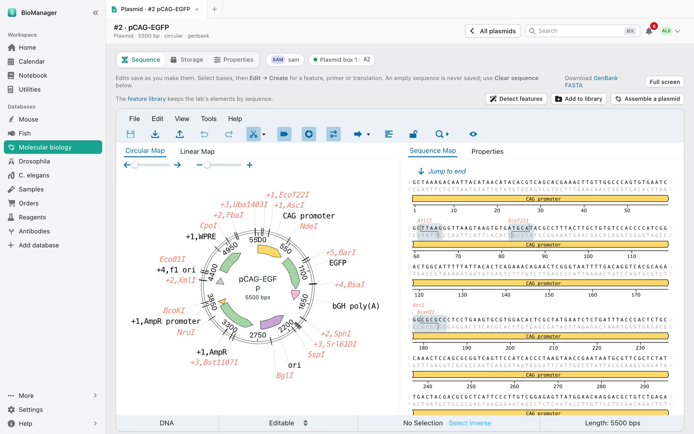
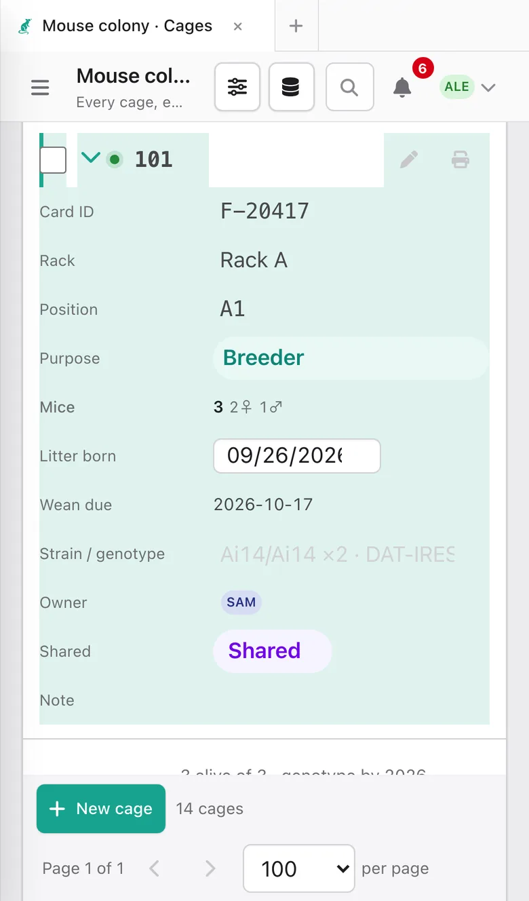
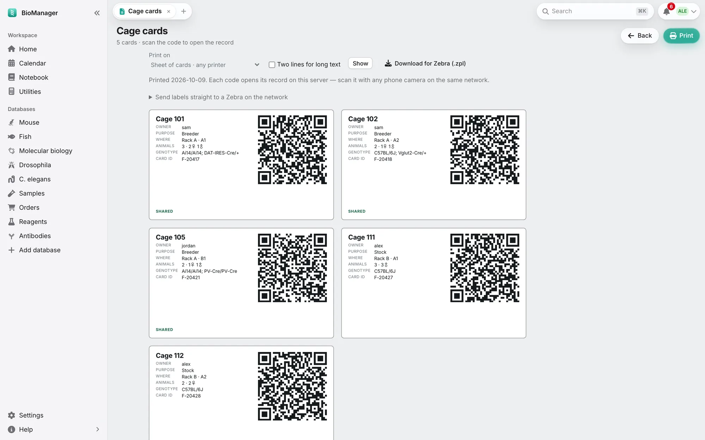

用户指南
使用 BioManager
BioManager 能做的一切，以及怎样把一个实验室搬进来——从第一次打开，到全实验室在一台共享服务器上协作。 刚接触，或者一直在用电子表格？先读从 Excel 过来： 花十分钟，能省下好几天。
第一部分
从这里开始
BioManager 是什么
BioManager 把生物实验室要管的东西放在一处：动物（小鼠、斑马鱼、果蝇、线虫，或你自己描述的任意物种）、 质粒、样本、订购、试剂、抗体和病毒，旁边还有日历和实验记录本。 它看起来、用起来都像电子表格，但底下是一个懂实验室的数据库：它知道一只小鼠 住在某个笼架上的某个笼里，今天产的一窝要在 P21 断奶，18 °C 的果蝇管转管频率只有 25 °C 时的一半， 某个抗体下个月就过期。
它有两种形式，程序是同一个：
| 桌面版 | 给一个人用。支持 macOS、Windows 和 Linux；数据只存在你自己的电脑上。 |
|---|---|
| 实验室服务器 | 给整个实验室用：一个 BioManager，大家用浏览器、Android 应用，或从 iPhone 主屏幕打开。托管通常免费。所有部署方式见这里。桌面版也可以替你搭一台： 设置 → 搭建实验室服务器（Settings → Set up a lab server）会问你装在哪里，然后自动完成，还能把你现有的记录一起带过去。 |
从 Excel 过来
如果你的实验室一直靠电子表格，那 BioManager 的大部分你已经会了。表格还在——点一个单元格就能输入—— 只是 Excel 里要你手动做的每件事，BioManager 都替你做了。
你熟悉的东西，在这里变成了什么
| 在 Excel 里 | 在 BioManager 里 |
|---|---|
| 一个工作簿，每类东西一个工作表 | 你的实验室，侧边栏里每类东西一个数据库：小鼠、斑马鱼、质粒、订购…… |
| 一行 | 一条记录，编号永不重复使用，所以“小鼠 1042”永远只指那一只。 |
| 输入、保存，然后问“谁开着这个文件？” | 直接在单元格里输入，边输入边保存。所有人可以同时编辑 同一批记录，谁的修改都不会覆盖别人的。 |
| 自动筛选 | 每个表格上方的搜索框和筛选标签：全部、存活、我的（All、Alive、Mine），每种状态一个。你上次的 选择会被记住，而且写在页面地址里，所以书签或发给别人的链接打开后，表格还是同样的筛选。 |
| 冻结窗格、隐藏列、列宽 | 滚动时 ID 列始终固定；列（Columns）用来隐藏和显示列；拖动列边缘 调整宽度。每个表格各自记住。 |
| 数据验证下拉列表 | 每列的选项（状态、类别、用途），在配置（Configure）或 下拉选项（Dropdowns）里设置。改一个选项的名字，所有地方都跟着改。 |
| 根据本列自动补全 | 根据实验室以前输入过的内容给出建议。在库存里，选中以前的 某个物品，会自动填好它的供应商、货号和价格。 |
| 向下填充、复制一行 | 在小鼠的批量添加（Add many）预览里，点一个单元格，向下填充（Fill down，或 Ctrl/⌘ + D） 就把它复制到下面各行。复制（Duplicate）可以复制任意一条记录。 |
| 粘贴一列 | 复制一列读数（比如 Nanodrop 导出的数据）或一块单元格，点表格里的第一个单元格 再粘贴：数值按显示顺序逐行往下填；如果复制了好几列，也会往右填，每个值都像手动输入一样保存。数字会跳过不属于它的选项列（比如 浓度和 A260/280 之间的单位列），并有提示说明从第几行填到第几行，所以顺序不同的列表一眼就能看出来。 |
| 算年龄、断奶日、转管日的公式 | 都替你算好：年龄、P21 断奶、基因型鉴定日期，以及随 培养箱温度变化的转管计划。 |
| 条件格式 | 状态标签；存活或在用的东西前面有个圆点（动物按年龄着色）；过期库存标红——还有 首页（Home），把今天需要你处理的事都集中在一起。 |
| 跨表 VLOOKUP | 真正的关联：小鼠在某个笼里，笼在某个笼架上；样本来自那只小鼠；订购到货后变成 那瓶试剂。点进去就能跳转。 |
| 版本历史，“这是谁改的？” | 审计日志（Audit log）记录每一次编辑：谁改的、改之前是什么； 批量操作记录（Batch history）可以撤销任何一次批量修改。 |
| 用邮件合并做笼子标签 | 笼卡（Cage cards）按卡纸尺寸排版，每张带二维码，用手机扫一下就能打开那个笼。 |
| 你原来的工作簿 | 每个数据库都有从 Excel 导入（Import from Excel），原样读入，不管列叫什么名字。 |
| 另存为 CSV | 每个表格都有导出（Export，CSV；小鼠还可以导出 Excel 和 PDF）。数据永远不会被锁住。 |
装好 BioManager、设置好实验室之后，就可以把表格导进来：大约半小时。
安装与设置
获取
| macOS | 下载，解压，把 BioManager 拖进“应用程序”。第一次打开时，右键点它 → 打开（Open），再点“打开”。 |
|---|---|
| Windows | 解压 zip，打开 BioManager 文件夹，运行 BioManager.exe。出现警告时选 更多信息 → 仍要运行（More info → Run anyway）。它的窗口使用 Microsoft Edge WebView2，Windows 11 自带；如果 Windows 10 电脑上 没有，BioManager 会提出从微软下载，并先在你的浏览器里打开。装好后 再打开一次 BioManager，就会用它自己的窗口了。 |
| Linux | 给 BioManager-Linux.AppImage 加上可执行权限（右键 → 属性，或 chmod +x），然后打开。 |
| 更新 | 桌面版每天检查一次新版本，有新版本时会提示，并附上新功能说明；BioManager →
检查更新…（Check for Updates…；Windows 和 Linux 在帮助（Help）菜单里）可以立即检查。安装并重启（Install and Restart）会下载新版本、校验，
并在应用退出时替换；无法自动替换时（Linux 的 .tar.gz，或没有写入权限的文件夹），它会打开下载
页面，按上面的方法安装。你的数据原地不动，新版本改动数据库之前会先留一份副本
（见你的数据）。取消勾选自动检查更新（Check for Updates Automatically）可以关掉每天的检查。 |
| 新功能 | 更新之后，无论是桌面版还是实验室服务器，打开的第一个页面会显示一段简短的 新功能（What's new）：新增了什么、什么变了、修复了什么，并附完整说明的链接。知道了（Got it）会永久关闭 它；帮助 → 新功能（Help → What's new）可以再次打开。 |
| 实验室服务器 | 不用安装：打开管理员给你的地址即可。欢迎页会介绍 BioManager 能做什么，然后引导你登录（Sign in）或创建账号（Create an account）。如何搭建服务器见 为实验室部署。 |
| 手机 | 用 Android 应用，或把实验室服务器添加到 iPhone 主屏幕：见 手机与笼卡。 |
设置问卷
第一个账号就是实验室的管理员（在服务器上，需要服务器启动时打印出来的一次性设置码）。 管理员接着回答一份简短的问卷，BioManager 就只搭建你会用到的东西——不多也不少：
- 你的实验室——名称、时区、日期写法和基因型鉴定日 （这些设置有什么用）。
- 实验室要管哪些东西？勾选动物和品系保种（小鼠、斑马鱼、果蝇、线虫、其他物种）以及分子 和耗材（质粒、样本、订购、试剂、抗体、病毒）。每一项还会多问几句：名称（例如 Mouse room B）； 鼠群要几个笼架、多大、位置怎么编号；果蝇和线虫要用哪些培养箱 温度。留空就用常规设置。
- 要哪些实验室功能？日历和实验记录本。
- 成员可以做什么？成员能否创建自己的数据库，能否为 全实验室添加数据库，能否在自己电脑上保留一份实验室副本，能否创建 API 令牌。
问题下方的每天向 BioManager 开发者发送匿名统计（Send BioManager's makers anonymous counts once a day）默认是勾选的；不想发送就取消勾选 （会发送什么）。
然后 BioManager 会建好这些数据库，连同笼架和培养箱，并带你回到首页。之后加入的每个人第一次登录时，都会看到 一页实验室数据库的欢迎导览（设置 → 再看一次欢迎导览（Settings → See the welcome tour again）可以重新打开）。
中文或 English。BioManager 会按照你的电脑或浏览器首选的语言显示：简体中文或英文。你可以在 设置 → 语言 里自己选择，也可以用登录页上的 中文 / English 切换。实验室里每个人各自选择；名称、备注等大家输入的内容保持原样。
把实验室搬进来
实验室设置好之后，大约半小时。有两种方式：从 Excel 导入（Import from Excel），用于你已有的表格； 批量添加（Add many），用于描述一次就能建好的一批新记录。
- 先建笼架。笼 → 笼架视图 → 新建笼架（Cages → Rack grid → New rack），名字和表格里一致，位置编号跟实物笼架上的 贴纸一样。这样，带 Rack 和 Position 列的表格就能把每个笼放到对应位置；没有位置的 会留在未放置（Unplaced）里，等你拖上去（平板上：点移动（Move），点笼，再点目标位置）。
- 打开“从 Excel 导入”。每个数据库的表格上方工具栏里都有——小鼠、斑马鱼、质粒、果蝇和线虫
管/皿、任意物种以及所有库存。选择文件（Choose a file，
.xlsx、CSV 或 TSV，最大 15 MB、5,000 行）， 然后点继续（Continue）。如果工作簿有多个工作表，在匹配结果上方选一个。不需要模板，也不用改 列名。 - 检查列是怎么匹配的。BioManager 按含义匹配，而不只是按名字：Position、
Slot 和 Well 都是位置，DOB 和 Born 是出生日期，Supplier 是供应商，
Cat. No. 是货号。一个名字可能有两种意思时，由列里的值来决定——Location 的值是
A1、B2……就是盒内位置，是Freezer 2这样的就是存放地点。每个匹配都会说明理由， 任何一个都可以改。 - 除非你决定，否则什么都不会丢。BioManager 没有的列，在库存或
物种数据库里会变成一个新列（如果你有配置权限），或者以
Header: value的形式放进备注（Into the notes）；选 不导入（Leave out）则跳过。表格缺少的必填列（比如负责人），会给所有行统一填一个值——对于 质粒和保种，还包括每行是个人（Personal）还是实验室公用（Lab common）（如果有 Lab common 列，则逐行读取）。日期 保持 Excel 的写法（3/14/2026、14/03/2026、12-May-26）：每一列自己判断 是日在前还是月在前，判断不出时，按实验室设置里的日期格式。读不出的日期，或在 未来的出生日期，会留空并保存在备注里。Male、m 和 ♂ 都变成 M； 状态和人员按名字匹配。如果 Cage # 只填了一次、向下合并到多只小鼠，每只都算在这个笼里； 导入时新建的笼归这些小鼠的负责人所有。 - 先预览，再导入。预览导入（Preview the import）会让每一行都经过与数据库自身 表单相同的检查，并按 Excel 里的行号列出会被跳过的行。记录下方的合计（Total）行会被 排除；ID 已被占用（鼠群里已有，或前面某行已用）的小鼠会拿到下一个空闲 ID，原来的 ID 保存 在备注里；预览会逐条说明。导入 120 只小鼠（Import 120 mice，按钮上会显示数量） 把其余的作为一个批次保存，可以在批量操作记录（Batch history）里撤销；修改匹配（Change the matches）返回上一步。
- 不是现成的表格，而是一批新的？小鼠用批量添加（Add many）：描述一只小鼠和数量，或者载入用 下载模板（Download a template）做好的 CSV。在任何库存和质粒里，批量添加可以直接粘贴从 Excel 复制的列表—— 每行一个名字，各生成一条记录。
- 打印笼卡（Print cage cards），挂到笼上。从现在起，电子表格只是备份，BioManager 才是正式记录。
首页
每天从首页开始：这里只显示需要处理的事，来自你能看到的所有数据库。用顶部的 布局（Layout）标签（或在设置 → 首页布局（Settings → Home layout）里）选择样式；这个选择只对你自己生效。
- 经典（Classic）
- 卡片式：你的数据库以图块显示，几个数字（小鼠总数、超过 30 周的小鼠、待断奶、待处理订购、实验记录本页数），以及 超过 30 周的小鼠、即将断奶、基因型鉴定队列、果蝇和线虫：到期、 动物数据库：到期、即将过期和库存不足、待归还的斑马鱼配对缸、未来 14 天和 最近订购等卡片。
- 时间轨（Tracks）
- 所有带日期的工作排在同一条日期标尺上，每类工作一条轨道，按已逾期、今天、3 天内或已安排着色。 可选 1、2 或 4 周。旁边是现在需要你处理和繁忙日。在手机上会变成按天排列的列表。
- 俯视（Freezer）
- 从上方俯视你的笼架，有到期事项的地方会亮起，还有一份取用清单（Pull list），按走动顺序列出未来三天的工作， 可以带进动物房。笼帽的颜色表示负责人。
布局标签旁边的自定义（Customize）可以按你的方式排列经典布局：勾选想要的卡片，拖动它们（或用箭头；双箭头把卡片移到最上面） 排好顺序，任意卡片都可以设为宽。有四张卡片默认关闭，可以添加：你的待办（本周到期 或无日期）、预约（未来一周预约的仪器）、实验记录本的最近页面，以及 计算器（你最近打开的，之后是常用的）。恢复默认（Back to the usual）会在确认后把一切恢复原样。和布局一样，这些设置只属于 你自己。
在每种布局中都有：
- 给你的
- 你的未读通知。
- 入门步骤
- 刚开始使用时，列出你的头几步，完成一项勾掉一项。管理员的清单是搭建实验室——添加笼架、导入 小鼠、打印笼卡、设置果蝇数据库、邀请实验室成员。成员的清单是自己的——找到你的小鼠、扫描笼 卡、申请订购、添加质粒、读这份指南。隐藏此清单（Hide this list）可以把它收起来。
- 即将断奶
- 和日历上显示的是同一份列表；点每一行会打开对应的笼。

第二部分
日常操作
每个数据库的用法都一样。在这里学一次就够了。
在表格里工作
- 直接编辑
- 点一个单元格输入，或从它的列表里选。边改边保存；底部的提示会显示所有更改已保存（All changes saved）。如果某个 修改保存不了（比如清空了必填项），单元格会变红并说明原因。
- 圆点
- 编号旁边的圆点表示存活或可用：活着的小鼠、在用的果蝇管、未完成的订购、有库存的试剂；灰色 表示不是。对动物来说，圆点颜色代表年龄：蓝色幼年，绿色成年，红色老龄（小鼠：8 周以下、8 到 30 周、30 周以上；斑马鱼：3 个月以下、到 18 个月、18 个月以上；果蝇管或线虫培养皿：子代还在发育、已成虫、 已过转管或转板时间）。过期的试剂、抗体或病毒也是红色。把鼠标指向圆点就能看到含义。
- 滚动和新建
- 滚动的是整个页面，而不是表格：搜索框和按钮固定在窗口顶部，列名在它们下面， 计数在底部。每页（per page）下的全部（All）会列出所有行。左下角的新建（New）会在表格末尾添加一个空行， 第一个单元格可以直接输入。小鼠品系、斑马鱼、斑马鱼品系、质粒或订购需要先填名字或鱼缸， 所以这些会打开表单。
- 打开一条记录
- 铅笔图标会在对话框里打开完整记录，所有字段分组显示。新建记录也用同一个对话框。
- 排序、列、导出、打印
- 排序（Sort）可以按任意列，也可以点列标题。列（Columns）隐藏你不需要的列；拖动边缘调整宽度。导出（Export） 把你看到的行下载为 CSV（小鼠还可以导出 Excel 和 PDF）。打印（Print）输出一张干净的表。你的排序、筛选、隐藏的列 和列宽都会在那台电脑上记住。
- 在手机上
- 表格变成每行一张卡片：编号和按钮在上面，下面按列名逐项显示。列（Columns）在这里同样可以隐藏 你不需要的内容。
- 保存被拒绝时
- 比如鱼缸 ID 已被占用：页面会告诉你原因，并重新打开填好你输入内容的表单，你只需改一个字段，而不是全部重填。
- 视图
- 视图切换在表格上方左侧，每个数据库都一样。适用的地方，表格还可以显示为 笼架视图（Rack grid）或冻存盒视图（Box grid）：每个格子显示记录的名称和位置；拖动格子就能移动。在触屏上，点 移动（Move），点一个格子，再点目标位置——如果那里已有格子就互换，拖到未放置（Unplaced）则移出。订购还可以显示为 看板（Board），每种状态一列：把卡片往后拖即可。
- 输入建议
- 文本列会提示以前输入过的内容，这样全实验室对同一个供应商或单位只有一种写法。
- 很久以前结束的记录
- 死亡超过 90 天的小鼠、清空的笼、用完的管子和丢弃的果蝇管不会列出，所以有多年 历史的鼠群也能很快打开。顶部有一行说明有多少条；显示它们（Show them）会列出全部。搜索仍能找到它们， 小鼠导出也包括它们。
批量操作
- 批量添加（Add many）
- 用于一批新记录：描述一条记录，再说要几条。在库存和质粒里，也可以粘贴一份名字列表， 每行一个。小鼠则填雌雄各多少只，或载入 CSV（下载模板（Download a template）会给出各列）；之后你会 看到一个可编辑的预览，显示将分配的编号。在预览里，向下填充（Fill down）把当前单元格复制到下面 每一行（也可以按 Ctrl/⌘ + D），点创建（Create）之前什么都不会保存。
- 从 Excel 导入（Import from Excel）
- 用于你已有的表格。每个数据库都能读入 Excel 工作簿或 CSV，列名随意：你检查匹配 结果，预览将创建什么、哪些行会被跳过，然后作为一个可以撤销的批次导入。 见把实验室搬进来。
- 选中后操作
- 勾选几行（按住 Shift 点击可选一个范围），底部会升起一条操作栏：设置字段、移动、更改负责人或状态、处死（sac）、 退役、删除。设置字段（Set field）可以给它们设置任意一列，包括你自己加的列（日期列填日期，数字 列填数字）。你无权修改的记录会被跳过并计数，绝不会被悄悄改掉。
- 复制（Duplicate）
- 把一条记录复制成一条属于你的新记录——下一份分装，或再下一次同样的订购。
查找
- 表格上方的搜索框会随输入即时筛选：ID、基因型、笼、备注都行。
- 旁边的筛选标签可以进一步缩小范围：全部（All）、存活（Alive）、我的（Mine）、实验室公用（Lab common）、某个状态、即将过期（Expiring soon）。
- 在任何地方按 ⌘/Ctrl + K 即可全局搜索：小鼠、笼、窝、实验、 品系、果蝇管、鱼缸、斑马鱼品系、卵批、质粒、订购、样本、试剂、抗体、病毒和实验记录本页面。名字 与你输入的完全相同或以它开头的排在前面（输入“S20”会先找到 S20 的管子，而不是提到 S200 柱子的备注），完整输入的批号 或货号排在仅仅包含它的结果前面。用方向键移动， 回车打开。
- 标签页。点链接会在当前标签页里跳转；+ 会在你的起始页打开一个新标签页 （设置 → 默认起始页（Settings → Default landing page）；没设就是首页）。拖动可以调整顺序，Alt（Mac 上是 ⌥ Option）+ 1…9 直接跳转。明天打开它们还在，而且 只属于你：别人在同一台电脑上登录，会有他们自己的标签页。
撤销与历史
侧边栏底部的更多 → 批量操作记录（More → Batch history）列出每一次批量修改——一次批量添加、一次移动、对五十行的状态修改、一次导入——每条都有 撤销（Undo）。如果之后有人改过这些记录，BioManager 会告诉你，并提供仍然撤销（Undo anyway），而不会悄悄 覆盖别人的修改。每个人能看到自己的批次；管理员能看到整个实验室的。
审计日志（Audit log，管理员可用）记录每一次创建、编辑和删除：时间、操作人、哪条记录，以及具体改了什么——
genotype: DBH-Cre → ∅。
通知
顶部的铃铛显示你不在时发生了什么：有人移动了你的动物或果蝇管、从你的繁殖笼里挑走了动物、
给你的小鼠录入了基因型；你提交的订购已下单、已到货或已取消；有人在
某条记录的备注里（试剂、订购、质粒、笼）或实验记录本评论里写了 @你；以及实验室消息，比如你被设为管理员。管理员
会收到每个新的订购申请。关于某条记录的通知会打开那条记录——订购通知打开那个订购。每天还会提醒你有待
做基因型鉴定的仔鼠。在设置 → 通知（Settings → Notifications）里选择要接收哪些类型；
你自己的修改永远不会通知你。
如果你的服务器能发邮件，每天会有一封摘要，列出已逾期或即将到期的事——转管、断奶、归还、即将过期的库存——发到 你个人资料里的邮箱（设置 → 提醒邮件（Settings → Reminder emails））。清空邮箱即可停止。
第三部分
你的数据库
每个数据库的规则都一样：
- 只有实验室要用的。默认没有任何数据库——鼠群、斑马鱼和质粒也一样。 设置问卷会添加实验室用的；之后管理员可以在添加数据库 → 现成数据库（Add database → Ready-made databases）里添加，也可以在 数据库的配置（Configure）里移除。移除不会删除任何东西：加回来，所有记录都在。
- 每个数据库名称旁边都有同样两个按钮：配置（如果你有权修改）和所有数据库（All databases）。
- 所有数据库把它们分成两组：动物（Animals）和分子与耗材（Molecular & supplies），每个都有打开（Open）和 重命名 / 配置（Rename / configure）。
- 地址跟着名字走。把 Antibodies 改名为 Primary antibodies，地址就变成
…/inventory/primary_antibodies。旧地址继续有效，所以打印的标签、书签、消息里的链接， 以及实验记录本页面里的@antibodies 5都还能找到它。 - 每个数据库的名字都是唯一的。与其他数据库重名（不区分大小写，包括内置的）会被
拒绝，所以实验记录本里
@加数据库名永远只指一个数据库。
小鼠鼠群
顶部的标签页：小鼠（Mice）、笼（Cages）、窝（Litters）、繁殖笼（Breeders）、实验（Experiments）、品系（Strains）和 下拉选项（Dropdowns）。我的鼠群 / 我的组 / 共享 / 所有人（My colony / My groups / Shared / Everyone）开关改变的是你看到什么，而不是你能 编辑什么：我的鼠群是你自己的加上你参与的共享笼，我的组是你所在项目组的， 共享只显示共享笼，所有人显示所有笼。在笼标签页里，每种用途都有一个筛选标签（Experiments、 Breeder……），只显示那类笼。

笼架和笼
笼 → 笼架视图 → 新建笼架（Cages → Rack grid → New rack）：设置行数、列数和位置编号方式——D7、4-7、
7D 或 1 到 80，和实物笼架上的贴纸一样。没有位置的笼会留在未放置（Unplaced）里；把它们拖
上去。每个笼都有用途（繁殖、保种、实验）、负责人、房间和笼里的小鼠。选中笼可以设置用途或负责人、
移动，或退役（Retire）。
笼有三种显示方式。表格（Table）：每笼一行，小鼠列在下面（可直接编辑），还有操作按钮； 产仔（Litter born）和断奶到期（Wean due）紧跟在小鼠后面，什么时候该断奶一目了然。直接改写笼号就能 重新编号（小鼠跟着走；与其他笼重号会被拒绝）。 全部收起（Close all）把每个笼折叠成一行（页面会记住），全部展开（Open all）再展开；行首的箭头 或小鼠数量可以单独展开或收起一个笼。卡片（Cards）：每笼一张卡片——位置、用途、负责人、品系、断奶时间、笼里的小鼠和同样的 操作——有自己的搜索框和活跃、繁殖、我的（Active、Breeding、Mine）筛选。笼架视图（Rack grid）：从正面看笼架。页面 会记住你上次用的方式。

小鼠
- 新建小鼠（New mouse）添加一只，批量添加（Add many）添加一批新的（或载入用下载模板（Download a template）做的 CSV），
从 Excel 导入（Import from Excel）用于你已有的表格（方法）。在批量添加里，笼号填
new就把这一批放进一个新笼；同时有雌雄时，雌雄各进一个新笼，除非勾选雌雄放在 同一个新笼（Keep both sexes in one new cage）。在预览里，new-2、new-3……表示更多的新笼，如果某个新笼 会同时有雌雄，会特别指出。 - 每只小鼠有性别、出生日期（年龄以周显示）、状态——breeder、experiment、geno、transfer、sac（繁殖、实验、待鉴定、转出、处死）——最多四个 转基因、基因型、笼、窝、负责人和备注。出生日期不能是未来的日期。
- 选中小鼠可以设置字段（负责人、状态、转基因、笼、备注、死亡日期）、加入实验（Add to experiment）或处死（Sac）。 设为 sac 或填写死亡日期就结束这条记录；它会留在历史里。
繁殖：从产仔到断奶
在笼（Cages）标签页，展开一个繁殖笼（点箭头或小鼠数量），或在卡片（Cards）里找到它： 产仔（Litter born）、基因型鉴定（Genotyping）和断奶（Wean）按钮都在那里。新的窝按 L-1、L-2、L-3……编号（也可以 自己输入 ID）。
- 产仔会询问出生日期（默认今天，可修改；未来的日期会被拒绝），并记录 这次生产。BioManager 自动算出断奶日（P21）和基因型鉴定日（P28，或在 实验室设置里选定的天数），到期时会出现在首页和日历上——两处是同一份列表。一个笼只记一个 产仔日期，所以新的一窝会替换上一窝：如果上一窝的仔鼠还在笼里，先给它们断奶。
- 基因型鉴定会询问父本、母本和仔鼠数量；创建窝（Create litter）建立这一窝，并为每只仔鼠 建一条小鼠记录，状态设为 geno。它们会留在首页的基因型鉴定队列里，直到录入结果。
- 断奶会打开断奶并分笼（Wean and distribute pups），已经填好这个笼的仔鼠，雌雄分行： 断奶并移笼（Wean and move）把每一行送到新笼或已有的笼，或者标记已断奶，稍后移笼（Mark weaned, move pups later）。无论哪种，这一窝 都会标为已断奶，并从首页和日历上消失。小于 P18 的仔鼠需要你确认后才能断奶。
繁殖笼（Breeders）列出繁殖笼——笼架和位置、雌雄各几只——以及它们的繁殖力，并标出超过 30 周的 繁殖鼠。认领（Pick）把一个繁殖笼 转到你名下；原负责人会收到通知。
实验、品系、下拉选项
- 实验（Experiments）把小鼠组成一个队列，分成处理组，记录每天对它们做了什么，以及体重： 见实验：适用于所有动物。（实验记录本里的实验是实验记录；这里的是 动物。）
- 品系（Strains）是实验室的品系和等位基因参考列表。
- 下拉选项（Dropdowns）保存每列可选的选项，让全实验室用同样的词。所有人都能看到；只有管理员 能修改。
斑马鱼
- 鱼缸
- 新建鱼缸（New tank）或批量添加（Add many，连续编号），以表格或笼架视图显示。用途：保种、繁殖、配对、 实验、隔离检疫。选中鱼缸可以设置用途或负责人、移动，或标记基因型鉴定。鱼缸视图里还有 处死记录（Sacrifice log）。
- 鱼
- 可以是一群（记录数量），需要时也可以是单条个体；状态有 alive（存活）、transfer（转出）、geno（待鉴定）、sac（处死）。可以移动或处死选中的 鱼。
- 卵批
- 设置配对（Set up a mating）：雄鱼缸和雌鱼缸、各放几条，以及什么时候放回。到期该放回的配对缸 会显示在首页，直到你标记已归还（Returned）。新建卵批（New clutch）记录每一次受精。
- 实验
- 对鱼的记录、一个鱼缸的鱼或一个卵批的幼鱼施加处理，跟踪它们的存活、体长或某个 表型；新建实验（New experiment）可以直接用一个鱼缸的鱼开始。见实验。
- 品系
- 你的品系目录，带 ZFIN 名称和建系亲本。
- 水质
- 每套循环水系统用添加系统（Add system）登记，记录读数（Log reading）记录温度、pH、电导率和 盐度，并有图表。勾选随此读数发出警报（Raise an alarm with this reading）可以标记问题。
果蝇和线虫
果蝇的果蝇管放在培养箱里的架子上；线虫的培养皿放在盒子里。标签页：果蝇管或培养皿、 计划（Schedule）、实验（Experiments）、基因型（Genotypes）、培养箱与架子（Incubators & racks）、冻存（Frozen，线虫）和设置（Settings）。
- 在培养箱与架子（Incubators & racks）里，添加每个培养箱及其温度，再在里面添加架子或盒子。
- 新建果蝇管（New vial，或培养皿）：基因型、用途和位置。果蝇的用途：保种、实验、杂交、处女蝇、子代、 扩繁、备份。线虫的用途：保种维持、实验、杂交、子代、同步化、RNAi、雄虫、饥饿。
- 计划（Schedule）显示已逾期、今天以及未来 7、14 或 30 天内的事。可以把果蝇管标记为已转管（Flipped；线虫： 已切块转板（Chunked）），收卵（Collect eggs）到新管（线虫：挑子代（Pick progeny）），并记录计数。间隔随 温度变化：在设置 → 温度与时间（Settings → Temperatures and timing）里设定；架子从 25 °C 移到 18 °C，计划会 自动调整。
- 在网格（Grid）视图中，架子上方的一行显示上次转管时间和下次到期时间（逾期时为红色）， 编辑（Edit）旁边的今天已转管（Flipped today）一键记录整个架子的转管（培养箱与 架子下的架子列表也有同样的按钮）。把鼠标悬停在这一行上可以看到它遵循的规则，例如 every 14 days at 25 °C（25 °C 下每 14 天）。
- 线虫：新建冻存批（New frozen lot）记录一次冻存；需要时复苏到新的培养皿上。
丢弃（Discard）让一个果蝇管退役（可以恢复）；复制到新管（Copy to a new vial）开始下一代。设置里还可以把 这些用词和用途改成你实验室的叫法。


实验（Experiments）标签页可以让果蝇管或培养皿接受药物、RNAi 或温度变化处理，并跟踪存活情况； 新建实验（New experiment）可以直接用一个架子上的果蝇管开始。见实验。
其他任意物种
侧边栏里的添加数据库（Add database）可以为其他任何东西建数据库——非洲爪蟾、蝾螈、细胞系、酵母。从 类小鼠、类斑马鱼或空白物种开始，然后描述它：
- 名称和用词——一只动物、它的饲养单元（鱼缸、笼、培养皿）、一个品系、一批同期出生的个体和一次繁殖 分别叫什么，年龄用天、周、受精后天数、代数还是传代数显示（后两种情况下，年龄显示 记录自己的 Passage 或 Generation 列，如 P12）。之后整个界面都用你的说法。
- 怎么计数——按个体、按群体计数，或按群体、需要时再细分到个体。
- 需要哪些功能——勾选你要的：饲养单元和笼架位置、品系、杂交和队列、系谱、基因型鉴定、 按日期推算的计划、环境读数、健康、体重、处死记录、冻存等等。每项在页面上都有一行 提示。在计划（Schedule）里，完成（Done）记录实际完成的日期；每条规则从自己上一次 完成算起，所以每两天一次的喂食不会让每四天一次的分缸重新计时。
- 你自己的列——文本、长文本、基因型代码、数字、日期、选项、是/否、实验室成员、品系链接， 或网页链接。它们和其他列一样在表格里编辑，设置字段（Set field）可以一次给所有勾选的行设置。
- 给谁用——仅自己（Just me，只有你和管理员能看到的个人数据库）或全实验室（The whole lab）。
以上任何一项之后都可以在数据库的配置（Configure）里修改，不会丢失记录。同一页面还提供库存类数据库 （样本、订购、试剂、抗体、病毒、引物与寡核苷酸、细胞系、自定义列表）以及果蝇或线虫保种数据库。图标从一格格的 图标里直接选；鼠标悬停可以看到名称。

它的实验（Experiments）标签页和鼠群的一样，适用于你的动物、群体和队列，也可以直接用一个 饲养单元里的动物开始：见实验。
实验：适用于所有动物
小鼠、斑马鱼、果蝇、线虫以及你自己定义的物种，在其他标签页旁边都有一个实验（Experiments）标签页（小鼠和 笼旁边；鱼缸和鱼旁边；果蝇管或培养皿旁边）。那里的新建实验（New experiment）可以直接用一整个笼、鱼缸、架子或饲养单元里的 动物开始。每个实验有一个页面，页面上的所有实验（All experiments）返回标签页。
| 小鼠 | 小鼠，或一整个笼。体重（或肿瘤体积、临床评分、存活）。注射、 激发、给药处理、手术、行为、取样、成像。 |
|---|---|
| 斑马鱼 | 鱼的记录、一整个鱼缸，或一个卵批的幼鱼。存活（开始时的个体中还有多少 活着）、标准体长或某个表型。水中给药、显微注射、热休克、损伤或剪鳍。 |
| 果蝇和线虫 | 果蝇管或培养皿，或一整个架子；写明每个开始时有多少只。它们没有体重： 记录存活，果蝇还可记录羽化和攀爬，线虫可记录产卵数和麻痹。食物中或培养皿上给药、RNAi 喂食、温度变化、饥饿、感染、转到新鲜食物上。 |
| 其他任意物种 | 动物、群体或队列，或一整个饲养单元。体重、长度、存活或评分。 |
任何实验都可以跟踪自定义的观测指标（观测指标 → 其他…（Readout → Something else…））：每个个体一个数值，或开始时的 个体中还剩多少。
实验页面
- 顶部是实验信息：名称、状态、开始（第 1 天）、结束、观测指标和描述，边输入边保存。
- 动物表格可以在处理（Treatment）和观测指标之间切换——处理视图里每个处理日一列：对接受处理的 每只动物显示 ✓ 和剂量（点击修改）；观测指标视图每天一列，直接输入（再加一天（Another day）添加一列）。 每只动物的分组也在这里编辑。
- 记录处理（Record manipulation）记录刚刚做了什么——HDM 组今天腹腔注射他莫昔芬 20 mg/kg——或处理方案中的 某一天。如果剂量按体重给，它会根据每只动物最近的体重算出剂量，并根据 溶液浓度（10 mg/mL）算出给药体积。勾选接受处理的动物，选择所用试剂（Reagent used，会记下批号； 过期的会标出），如果需要，还可以为每只动物建一条样本记录（make a sample record for each one），存到样本里，以该动物为 来源。
- 图表按组显示观测指标随天数的变化（数值，或相对第一天的百分比；计数则是相对开始时 个体数的百分比）。每个处理日是一条虚线：指向它可以看到那天做了什么、是谁做的。星号标出 组间有差异的日子，下方的逐日检验（Tests by day）列出每项检验（两组用 Welch t 检验，多组用单因素方差分析， 计数用 χ² 检验），每天单独检验。
处理方案
处理方案（Regimen）列出要做什么、在哪些天做：类型、内容、剂量、途径、溶液、组别和天数
（1、2-5、2/3/4/5、1, 8, 15）。第 1 天就是开始日期。要做的那些天
会显示在日历上，实验负责人每天早上会收到当天待办的通知（在
设置 → 通知 → 实验（Settings → Notifications → Experiments）里关闭）。在页面上有人记录之前，什么都不算完成。另存为
处理方案…（Save as a regimen…）把它保存下来，用于规划下一批队列。
在实验台上，以及之后
- 实验台模式（Bench mode，用手机扫它的二维码）：选好要做的事，然后一次一只动物，数字很大—— 输入每个体重或计数，或给每只动物做今天的处理后点已给 ✓（Given ✓）；最后统一记录。扫描卡片（Scan a card）用手机摄像头读取 笼卡、鱼缸卡或果蝇管卡，直接跳到里面的动物。
- 导出（Export）下载一个 Excel 工作簿：观测指标的长格式（用于 Prism 或 R）和宽格式、每只动物的处理记录，以及 逐日检验结果。
- 添加到实验记录本（Add to notebook）为这个实验建一页你的实验记录，里面实时显示它的处理和观测指标
（在任何页面里用
/experiment都能插入一个；冻结副本（Freeze a copy）把它保留为当前的样子）。
质粒
- 可以显示为表格（Table）、按存放的冻存盒（Boxes）显示，或显示为列表（List）；筛选标签有 我的（Mine）、有序列（Has sequence）、在盒中（In a box）。
- 表格中每个质粒编号旁边的序列（Sequence）会打开它的序列和图谱（还没有序列时显示添加序列（Add sequence））； 点编号也会打开同一页面。
- 新建质粒（New plasmid）填写名称、骨架、插入片段、抗性、负责人和冻存盒位置（留空则取下一个空位）——
也可以粘贴一份名字列表一次建多个。可以拖入 SnapGene
.dna、GenBank、FASTA 或纯文本序列。 - 打开一个质粒，可以在可交互、可编辑的图谱上查看它的序列和特征（编辑会自动保存），还可以
全屏；另外两个标签页是存放（Storage）和属性（Properties）。存放里还列出用这个质粒制备的病毒
（见病毒）。它的地址里带着编号：12 号质粒是
…/plasmid/12。 - 每管都记录小提的浓度（Concentration，ng/µL）和 260/280，在表格里和存放标签页上都能看到， 该标签页还列出链接到它的实验记录本页面。
- 归属（Belongs to）：个人（Personal），或实验室公用（Lab common）——任何人都能编辑（共享的保种质粒），但只有负责人或 管理员能更改归属或删除它。Lab common 筛选标签会列出它们。
- 选中质粒可以设置负责人、抗性或归属、移到某个冻存盒，或删除。移到另一个盒子但没指定 位置时，质粒会占用下一个空位。从 Excel 导入（Import from Excel）可以把你原来的列表导进来。

样本、订购、试剂、抗体、病毒
同一套机制，八种起点，各有自己的列和状态：
| 样本 | 组织和材料，关联到它所来自的动物，存放在室温、4 °C、−20 °C、−80 °C 或液氮（LN₂）中的冻存 盒位置上，测量值以数字记录：Conc.（浓度）及其单位、260/280、260/230、Volume (µL)（体积）。 状态：可用、在用、用完、已丢弃。 |
|---|---|
| 订购 | 实验室申请购买的东西：供应商、货号、数量、价格、经费账号。状态：已申请、已下单、 已到货、已取消——可以用表格，也可以用看板（Board）拖动卡片。 |
| 试剂 | 数量、浓度、CAS 号、存放温度、危险性、批号和有效期。状态：有库存、不足、用完、 已丢弃。 |
| 抗体 | 宿主、克隆性、克隆号、偶联物、反应种属、应用、稀释度、亚型、RRID，以及每管放在哪里。 |
| 病毒 | AAV、慢病毒、狂犬病毒及其他载体：血清型、制备所用的质粒（制备自（Made from））、启动子、 表达内容、滴度、生物安全等级、制备日期，以及每份分装在 −80 °C 冻存盒中的位置。状态：有库存、不足、用完、已丢弃。 |
| 引物与寡核苷酸 | 序列（5′→3′）、方向、靶标、配对引物、储存浓度 µM 和修饰。Length（长度）、 GC % 和 Tm 由序列自动算出（最近邻法，50 mM Na⁺，250 nM）。添加引物对（Add primer pair）一次建好 名称-F 和 名称-R，互相注明对方，并排放在盒中。状态：已订购、有库存、不足、用完、 已丢弃。 |
| 细胞系 | 每个细胞系或克隆的冻存管：物种、亲本、代数、冻存日期、每管细胞数、培养基、 筛选、支原体检测结果和日期，以及在液氮冻存盒中的位置。状态：有库存、已复苏、用完、已丢弃。 |
| 自定义列表 | 完全由你定义。 |
订购：从下单到上架
- 新建订购（New order）。物品、供应商、货号和数量是必填项（带星号），所以不会有填了一半的订购发出去。 输入实验室以前用过的物品名或货号并选中它：供应商、价格和经费会按上次自动填好。 实验室管理员会收到每个新申请的通知。
- 跟进进度。状态筛选标签——已申请、已下单、已到货、已取消（Requested、Ordered、Received、Cancelled）——点一下就能看到每个阶段；申请人 会在每次状态变化时收到通知。
- 到货了。标记为已到货后，BioManager 会问加入库存？（Add it to stock?）：新建一条试剂、抗体或病毒记录，名称、 供应商、货号、批号、数量和有效期都已填好，打开后你只需补上存放位置。（之后，订购上的 入库（To stock）按钮也能做同样的事。）从此订购上显示 Reagents #8，试剂上显示它来自哪个 订购；两者可以互相跳转。
- 快用完了？任何试剂、抗体或病毒上的购物车按钮再次订购（Order again），会打开一个新订购，带上它的详细信息，以及上次订购时的 数量、价格和经费。如果它已经在订购中，按钮会显示订购中（On order）， 新订购打开时会附一条备注，注明那个未完成的订购和申请人。
所有库存通用
- 我的（Mine）和实验室公用（Lab common）把你自己的库存和实验室共享的分开。
- 即将过期（Expiring soon，30 天内）和已过期（Expired）筛选标签；已过期和库存不足的也会显示在首页。
- 冻存盒视图（Box grid）把物品放进冰箱里的冻存盒；和其他地方用的是同一批盒子。盒子的存放条件（Stored at，−80 °C、LN₂……） 会传给放进去的东西，移动盒子时它们也跟着移动。放进盒子但没指定位置的物品会占用下一个 空位。把管子标为用完、空或已丢弃会释放它的位置；位置备注会保留它原来在哪。新建冻存盒（New box）有 数量（How many），可以一次建好一整个冻存架。
- 记录对话框底部的引用此记录的实验记录本页面（Used in notebook pages）列出链接到它的页面
（
@antibodies 5；见实验记录本）。 - 配置（Configure，创建者或管理员）：名称、要跟踪什么、选项和状态（重命名会同时更新已有物品的标签）、 你自己的列，以及哪些字段是新建物品必填（needed for a new item）。
- 质粒列（病毒的制备自（Made from），或你在配置里以 A plasmid 类型添加的列）：输入质粒的 编号或名称，或从列表里选，单元格就会链接到那个质粒。质粒的存放（Storage）标签页会在 由此质粒制备（Made from this plasmid）下列出所有用它制备的东西。


日历
- 月、周、日（Month, Week, Day）和列表（List）视图。自动填入：断奶、基因型鉴定和处死提醒、果蝇和线虫的转管与
收卵、各物种的计划、斑马鱼鱼缸和试剂过期。点一下（每种视图都是单击）就会打开它
所来自的记录。链接可以直接打开指定的视图和日期：
/calendar?view=week&date=2026-10-05。 - 侧边栏里有一个小月历用来跳转，一个显示（Show）列表，每类都有颜色和数量（日程、待办、 鼠群、保种和物种、耗材、实验流程、仪器、休假、关联日历），还有仪器和 正在进行的流程。
- 新建日程（New event）可以建日程、待办（今天、明天、下周或某天到期）、预约仪器（Book equipment）、休假（Time away） 和开始流程（Start a protocol）。拖动日程、待办或预约就能移动它。
- 谁能看到（Who sees it），对日程或待办：仅自己（Only me）、全实验室（Everyone in the lab）或你的某个 项目组。仅自己的，其他人都看不到，管理员也不例外。共享的日程只有 添加者和管理员能修改；共享的待办，相关的任何人都能勾掉。新建日程默认属于实验室，新建待办默认 属于你自己。
- 重复（Repeats）：日程每 N 天、周或月重复一次，或每月同一个星期几（第一个星期一），直到某个 日期。删除这一次（Delete this one）只去掉一个日期，只改这一次（Change this one only）只移动或修改这一次；保存（Save）则改动所有 重复。
- 流程（Protocols）：把步骤按从第 0 天起的天数写一次（他莫昔芬第 0–4 天，第 14 天植入，第 42 天灌注），然后 为某个实验或队列启动。每一步都落在对应的日子上；移动第 0 天，所有步骤跟着移动。已启动的流程会保留启动时的 步骤，即使之后流程被修改。（这些是把日期排上日历；实验记录本里的实验流程记录的是实验台上的具体步骤。）
- 仪器（Equipment）：在管理（Manage）里添加实验室的仪器，在那里编辑（Edit）一台仪器可以改名、注明位置或 改颜色；它的预约会跟着更新。与其他预约时间重叠的预约会被拒绝，并说明是谁 在什么时间预约了。新预约可以每天、每个工作日或每周重复，直到某个日期——每次重复都是一个独立的预约；只要 有一次冲突，就一个都不会建。打开一个预约后点复制（Duplicate），会在另一天预约同一台仪器、同样的时段。
- 休假（Time away）：请假或开会。即将离开（Away soon）列出这期间该人名下到期的事——动物、果蝇管、 待办、预约、流程步骤——并询问由谁代管；被指定的人会收到通知。
- 关联日历（Connected calendars）把 Google 日历和任何 iCal 订阅并排显示，只读。
- 在手机上：一个私人链接（只含你自己的事，或全实验室的），可添加到 Apple、Google 或 Outlook 日历。大约 每小时更新一次。生成新链接（Make a new link）会让旧链接失效。

实验记录本与工具
页面
- 页面放在主题（Topics）里，像写文档一样写，以 Markdown 格式保存。新页面放进你当前打开的主题，没有打开主题时放进 收件箱（Inbox）（实验和组会记录各有自己的主题）。在行首输入 / 会弹出 模块菜单：表格、图表、实验流程、计算器以及下面介绍的其他模块。模板（Templates）：⋯ → 存为模板（Save as template），之后就能用它新建 页面（与已有模板重名时，会先询问是否替换）。模板保留页面类型（实验模板建出来的是实验页面）；仅保留结构（Structure only）保留标题、 步骤和表头，去掉结果、勾选、读数、图片，以及写在 Results、 Observations 或 Conclusion 下的内容；与实验室共享（Share it with the lab）把它提供给 所有人。
- 输入
@可以链接小鼠、质粒、订购或任何库存记录——抗体、样本、引物 （@antibodies 5），按名称、货号或批号查找（完整输入的批号或货号，如@0012，排在最前；anti-β-actin 或 Waf1/Cip1 这样的名字按原样就能找到），也可以按名称链接一个数据库 （@antib会提示 Antibodies，选中后列出其中的记录），或者链接同事（@jordan，用于待办事项）；之后页面和记录互相链接， 记录会在引用此记录的实验记录本页面（Used in notebook pages）下列出这个页面。链接标签会在编号后显示记录名称 （@antibodies 5 · anti-p53）。鼠标悬停可以看到 详细信息；点击打开记录，↗（或 ⌘/Ctrl+点击）在新的 BioManager 标签页里打开。 - 每日记录（Daily log，Today）和组会（Meetings）：报告人轮值、共享的会议记录，以及待办事项
（
- [ ] @name …, due …），会发到那个人的待办里——在任何页面都可以用 ⋯ → 把 @name 的事项发为待办（Send @name tasks as to-dos）。
实验和实验流程
- 实验（Experiments）：目的、实验设计、样本和批号、步骤、结果。开始（Start）和完成（Finished）会记下时间； 计划中、进行中、已完成或失败会显示在侧边栏。（鼠群里的实验标签页管理的是动物分组。）
- 鼠群实验（Colony experiment，
/experiment）在页面里显示你任何动物上的一个实验：每天的处理、 完成时间和操作人、每只小鼠的给药量，以及体重的表格和图表（克数或相对第一次 体重的百分比，并标出处理日）。它会保持更新；冻结副本（Freeze a copy）把当前显示的内容固定在页面里， 这样之后实验再改，也不会改动你的记录。在实验本身的页面上，添加到实验记录本（Add to notebook）会为它新建一页 你的记录，里面已经放好这个模块。 - 实验流程（Protocols）有版本编号。由此开始实验（Start an experiment from it）把步骤复制为检查清单，并记录
所用版本；执行模式（Run mode）在实验台前一步一步带你完成。侧边栏里的实验流程（或
/protocol）打开流程库：实验室自己的流程，以及十几个内置的常用流程，可以插入或复制。
数据和计算器
- 数据表（Data sheets）：从 Excel 或 CSV 粘贴，添加公式列，然后作图（柱状图、点图、箱线图、散点图、折线图），带误差 线、拟合线，以及 t 检验、Mann–Whitney 检验或方差分析。酶标仪（Plate reader）和 qPCR 模块根据 标准曲线算出浓度，或算出 ΔΔCt 倍数变化。
- 缓冲液配方（Buffer recipes）随体积缩放；内置常用缓冲液，实验室自己的配方全组共享。计算器（Calculators） 包括稀释、摩尔浓度、预混液、梯度稀释、连接、细胞、凝胶、DNA/RNA 和蛋白（A₂₈₀）（Protein (A₂₈₀)）：粘贴 序列（或给出 ε 和分子量）和读数，就能得到 µM 和 mg/mL。步骤里的时长会带一个 ⏱ 计时器，以步骤自己的文字命名；时间点（6, 24, 48 h、at 24 h、the 48 h samples）不会。页面上的时间（started 16:00）按实验室的时区计算，不管你电脑设的是哪个时区。
给页面签名
当某一页应当作为你工作的正式记录时，就签名（Sign）——签不签由你决定，一页一页来；不会有任何东西强制你签。你要确认 自己的身份（输入密码；如果用 Google 或微软账号登录，则输入用户名），并确认签名的含义。页面的确切文本会 生成指纹并保存为一个版本，其中实时显示的实验会冻结为当时的状态，页面随即锁定：谁都不能修改 或删除。实验室同事可以见证（Witness）。要修改，页面负责人需填写理由进行修订（Amends）；理由和每个 签名都会保留在页面上，并分别显示页面现在是否仍与签名时一致。
协作
可以把页面共享给他人阅读或编辑，对象可以是个人、全实验室或某个项目组；有编辑权限的人可以
同时在里面输入。可以对某一段加评论，用 @name 通知
那个人（在设置 → 通知（Settings → Notifications）里可以关掉这类通知）。版本历史（Version history）保存每一次编辑，可以
比较或恢复。标签和搜索（Tags and search）覆盖你能打开的所有页面。
工具
侧边栏里实验记录本下的工具（Utilities）收录了 41 个实验台计算器。在列表里找，或在查找 计算器（Find a calculator）里输入（直接输字母就行：a260、ddct，或你正在做的事，比如 nanodrop）；结果随输入即时变化，每个计算器都会在这台电脑上记住你上次输入的值，重置（Reset）恢复 到示例值。大多数计算器会求解你留空的那个字段（会有标记），单位可以自己选。
- 溶液与缓冲液
- 摩尔浓度；稀释（C₁V₁ = C₂V₂）；梯度稀释；百分比溶液；×倍储液；质量浓度 ↔ 摩尔浓度；缓冲液 pH（Henderson–Hasselbalch 方程，考虑温度）；渗透压；化学品换算（配方里是一种形式，手头是另一种 水合物或盐）。输入化学品名称或分子式即可填入分子量，优先使用实验室自己的列表（MgCl2·6H2O 和 magnesium chloride hexahydrate 是同一种）；不认识的化学品会留空，由你自己填分子量。
- DNA 与 RNA
- 由 A₂₆₀ 算浓度；质量 ↔ 摩尔 ↔ 拷贝数；寡核苷酸 Tm、GC、分子量和溶解体积；连接反应 插入片段:载体比例；HiFi/Gibson 组装；PCR 和 qPCR 预混液；由标准曲线算 qPCR 扩增效率；ΔΔCt 倍数变化； 转化效率。
- 蛋白
- 由 A₂₈₀ 算浓度；由序列算分子量、ε 和 pI；标准曲线（BCA、Bradford、ELISA）读出 样品浓度；SDS-PAGE 配胶；每孔上样 µg 数。
- 细胞
- 血球计数板计数；铺板（按培养器皿）；倍增时间；转染体系放大；按 MOI 算病毒量； 由阳性细胞百分比算慢病毒滴度；细胞冻存；给药处理的药物和溶剂对照用量。
- 细菌与酵母
- OD₆₀₀ 换算细胞数和稀释；达到某个 OD 所需时间；平板和培养基中的抗生素用量。
- 离心、动物与凝胶
- rpm ↔ × g；按体重给药剂量；琼脂糖凝胶；放射性衰变。
- 统计与单位
- 平均值、SD、SEM 和 CV；每组所需动物或样本数；单位换算。
计算器下方的参考表（Reference tables）：培养器皿、缓冲液、抗生素、琼脂糖凝胶、同位素和分子
量。指向某个计算器的链接（…/utilities#dilution）会直接打开它。

第四部分
以实验室为单位工作
在实验室服务器上，所有人都在同一个实时数据库里工作。管理员页面——用户管理（Manage users）、 访客（Guests）和笼架与冻存盒（Racks & boxes）——在侧边栏底部的更多（More）里，与实验室设置、鼠群概览 和审计日志放在一起；账号菜单里也有（点右上角你的名字）。
谁能做什么
- 你能编辑自己的东西——你的小鼠、笼、果蝇管、质粒和物品。
- 共享笼和任何标为实验室公用的东西属于全实验室。用途为繁殖笼（Breeder）的笼 默认是共享（Shared）；其他笼（实验笼、Breeding 笼）默认是个人（Personal）。只有笼的负责人或 管理员可以把笼设为共享、设为个人或转给别人；管理员和动物饲养人员仍然能查看和修改所有 笼。
- 所有人都能看到实验室的数据库，因为有漏洞的普查就不算普查。
- 个人数据库（图块上显示 Just you）只有负责人和管理员能看到； 项目组的数据库只有组员和管理员能看到。
- 管理员可以修改任何东西、进行实验室设置、审批人员，以及查看审计日志。
- 动物饲养人员（Animal care，技术员、兽医；用户管理（Manage users）里的一种角色）可以修改任何人的动物、笼、鱼缸和果蝇管，但 不能修改别人的实验、实验记录本页面或设置（他们自己的，与普通成员一样管理）。设施管理员（Facility manager）还负责笼架、房间、培养箱、水系统以及每个 数据库的设置，但不管账号。
- 笼架与冻存盒（Racks & boxes，管理员，在账号菜单里）规定谁可以调整大小、重命名或删除每个笼架、冻存盒和培养箱， 覆盖所有数据库——斑马鱼的架子和你自己数据库里的架子也包括在内。没有指定任何人的，只有管理员能操作。
当一条记录不属于你时，BioManager 会告诉你它属于谁，而不只是简单地拒绝。
项目组
项目组是实验室里做同一个项目的几个人：介于你个人和全实验室之间的一层。更多 → 项目组（More → Project groups）列出 所有项目组及其成员。管理员创建项目组、命名并选择成员；项目组的组长（leads）也可以添加和移除 成员。一个人可以同时在多个项目组里。
- 与项目组共享。凡是可以选共享（Shared）或实验室公用（Lab common）的地方，都会同时列出你的项目组：与某个组共享的繁殖 笼、质粒或试剂，组员都可以编辑。繁殖缸或实验室保种果蝇管，在它的对话框里的共享给（Shared with）中 选择项目组。实验室其他人仍然能看到它们。
- 项目组的数据库。创建数据库时，给谁用？（Who is it for?）会列出你的项目组：只有组员（和管理员） 能看到，组员会收到添加通知。数据库页面上的与项目组共享（Share with the group）可以把你自己的某个数据库交给一个项目组。
- 项目组的日程和待办。在日历上，谁能看到（Who sees it）会列出你的项目组：组员会在 自己的日历上看到它（待办还会出现在首页），任何组员都可以勾掉待办；只有创建者或管理员能修改日程或 删除待办。
- 实验记录本。页面上的共享（Share）除了个人，也可以选项目组，权限为查看或编辑；模板也可以指定给某个项目组 （谁可以使用（Who can use it））。
- 鼠群。“我的鼠群”旁边的我的组（My groups）显示你所在项目组所有成员的小鼠和笼。
删除项目组（管理员）后，原来共享给它的东西回到各自负责人名下（繁殖缸或保种果蝇管则按用途归实验室）， 项目组的数据库回到创建者名下。
成员与访客
- 加入
- 新注册的账号要等管理员在用户管理（Manage users）里审批。如果服务器支持，成员也可以用 Google 或 微软账号，或所在机构自己的账号登录，并在设置 → 登录方式（Settings → Sign-in methods）里关联（如何设置）。
- 管理员
- 用户管理（Manage users）可以设立和撤销管理员、停用账号、重置密码；实验室设置（Lab setup）也可以 把某人设为管理员。至少保留两位管理员。
- 离开
- 侧边栏里的更多 → 鼠群概览（More → Colony overview，管理员）按负责人列出每个笼，以及闲置的笼和没有笼的存活小鼠；在 笼架与冻存盒（Racks & boxes）里移交笼架，然后停用账号。他们的记录和历史都会保留。
- 访客
- 给实验室以外的人——合作者、来访者——用一天到一个月：在账号菜单的访客（Guests，管理员）里 填写给谁、多长时间，点生成邀请码（Make a code）。对方打开链接、输入邀请码，就能用自己的账号像成员一样 工作，直到期限结束或你点立即结束（End now）。在 Tailscale 服务器上，管理员可以允许访客不装 Tailscale、直接从 互联网进入（方法）。
实验室设置
侧边栏里的更多 → 实验室设置（More → Lab setup，管理员）可以随时重新打开问卷：开启或关闭数据库、给实验室改名、选择 日历和实验记录本，并设定成员可以做什么——创建自己的数据库，或为全实验室添加数据库。在 谁负责管理实验室（Who looks after the lab）里可以设立管理员。
关闭一个数据库会把它隐藏，并对成员关闭，即使通过保存的链接也打不开；数据会保留，管理员仍然可以打开 它（会有提示说明它已关闭）。
在你的实验室（Your lab）里，除了名称还有：
- 时区（Time zone）——决定“今天”和“已逾期”的含义，以及显示的时间。留空则使用服务器（或电脑）的时区。
- 日期（Dates）——列表和消息里日期的写法：Sep 26, 2026、26 Sep 2026 或 2026-09-26。 需要你输入的日期字段跟随电脑的语言设置。
- 基因型鉴定日（Genotyping day）——出生后第几天发出基因型鉴定提醒（默认 P28，可修改）。
手机与笼卡
- Android
- 从下载页面安装
BioManager-Android.apk（如有提示，允许浏览器 安装应用），输入一次实验室服务器的地址就能用了。扫描（Scan）按钮可以读取笼卡。 - iPhone 和 iPad
- 在 Safari 里打开服务器，点分享 → 添加到主屏幕（Share → Add to Home Screen）。BioManager 会有自己的图标， 像应用一样全屏打开；可以用摄像头扫描笼卡。（没装应用的 Android：Chrome → ⋮ → 安装应用（Install app）。）
- 笼卡
- 笼 → 笼卡（Cages → Cage cards）按标准卡纸尺寸打印笼卡——负责人、用途、放在哪里（笼架和 位置）、动物及雌雄各几只、基因型和二维码。在笼架前扫一下，就能打开那个笼直接编辑。 鱼缸标签（Tank labels，斑马鱼）、果蝇或线虫数据库里的标签（Labels），以及勾选的样本、试剂或任何 库存行上的标签，对鱼缸、果蝇管和管子也有同样的作用。
- 标签打印机
- 打印到（Print on）可以选择适用于任何打印机的整张卡纸，或标签打印机的 卷纸：Brother QL（62 × 29、90 × 29、100 × 62 mm）、Zebra（2 × 1、3 × 1、4 × 2、4 × 2.5 in）或冻存管标签。之后每页打印一张 标签，文字自动适应大小；在打印对话框里选择标签打印机和对应的标签尺寸，边距选无（None）。你的选择会 被记住。对于管子，每张标签上（On each label）选择标签显示什么（冻存盒、位置、批号、负责人、某一列比如 浓度、打印日期），每个数据库分别记住；长文本分两行（Two lines for long text）会让过长的名称或位置 换行而不是被截断。对于 Zebra，下载 Zebra 文件（.zpl）（Download for Zebra (.zpl)）以 Zebra 自己的语言输出标签；或者由管理员一次性填好 Zebra 在实验室网络中的地址（在直接发送标签到 Zebra（Send labels straight to a Zebra）下），之后点发送到 Zebra（Send to Zebra）就能立即打印。


第五部分
数据与帮助
你的数据与备份
桌面版
| macOS | ~/Library/Application Support/Biomanager/ |
|---|---|
| Windows | %APPDATA%\Biomanager\ |
| Linux | ~/.local/share/Biomanager/ |
- 你的数据存放在应用之外，所以更新或重装都不会动到它。
- 新版本改动旧版本建的数据库之前，会先把它复制到该文件夹里的
backups/before-upgrade-….db（保留最近十份）。每个版本发布前都会测试打开此前每个版本建的实验室数据，确保什么都不丢。 - 用 Time Machine 或“文件历史记录”备份这个文件夹；手动复制时请先关闭 BioManager。
实验室服务器
服务器每晚备份一次，每周恢复一次最新备份以证明备份可用，还可以把加密副本存到 异地——见保护数据安全。
在你电脑上保留一份实验室副本
桌面版可以保留一份实验室服务器整个数据库的副本，这样实验室的记录就不止存在一台 机器上：
- 在服务器上：设置 → 电脑上的实验室副本（Settings → Copies of the lab on your computers），填写电脑名称，点生成密钥（Make a key）。 复制密钥；它只显示一次。（管理员总是可以；成员需要实验室设置允许。）
- 在那台电脑的桌面版里：设置 → 保留实验室服务器的副本（Settings → Keep a copy of your lab server）。输入服务器 地址和密钥，点保存并立即复制（Save and copy now）。
- 从此，只要应用开着，它每天都会做一份新副本、校验、保留最近 14 份，并同步 上传的文件。卡片上显示上次复制的时间；在服务器上，列表显示每台电脑以及它的副本有多 新。撤销（Revoke）可以阻止某台电脑（比如丢失的笔记本）继续复制。
副本放在应用自己的数据旁边，绝不会碰它。管理员的副本是整个实验室，服务器万一丢失，可以用它 重建（方法）：存有这种副本的电脑，要像服务器本身一样对待。 成员的副本只包含他们在应用里能看到的内容：没有任何人的密码，没有别人的私人实验记录本页面或 个人数据库，也没有审计日志。访客不能保留副本。
一个实验室，多台设备
一台设备保存实验室的主副本（master copy）；其他设备都通过它的地址在主副本上工作，所以从不需要 合并，也不会因为两处同时写入而丢失内容。设置 → 设备（Settings → Devices）显示当前是哪台设备，以及每台 与实验室关联的电脑（通过实验室副本（Copies of the lab）里的密钥）：它怎样使用实验室、版本，以及最后一次 联络的时间。
- 实验室服务器就是主副本，除非管理员把它移交出去。
- 在此窗口打开实验室（Open the lab in this window，已关联的桌面版）：应用窗口直接打开实验室本身，就像浏览器 一样，而电脑照常保留每天的副本。前往 → 本机的 BioManager（Go → This Computer's BioManager）回到它自己的数据。
- 在网络上共享此实验室（Share this lab on the network，桌面版，管理员）：这台电脑成为同一网络中所有设备的 主副本，其他设备打开它显示的地址，并用在那里的账号登录。它必须保持开机、不休眠。 连接没有加密，所以只在你信任的网络上共享；其他场合请用实验室服务器。它自己的页面 （搭建服务器、它的副本、它的设备）不会提供给其他设备。
- 设为主副本（Make it the master，在主副本上，管理员）：针对一台持有管理员密钥、此刻打开着、版本相同的已关联
桌面版。一分钟内它会冻结主副本（只读，所以不会丢失任何修改），做最后一份副本，把自己原有的
数据保存在
backups/before-taking-over-….db，并在自己的网络上共享实验室。旧的主副本保持只读， 并显示横幅，引导所有人前往新地址。所有人都要用实验室账号重新登录。其他 服务的登录（Google 日历）不会带过去，需要重新连接。 - 交还主副本（Give the master copy back，在持有主副本的桌面版上）：它的数据库和新文件会传回去；另一台设备
把原有内容保存在
backups/before-taking-back-….db，重新成为主副本。这台桌面版变为只读， 并在那里打开实验室；回到本机自己的实验室（Go back to this computer's own lab）恢复它接管之前的数据。 - 如果持有主副本的电脑丢失，管理员可以在旧的主副本上选择重新设为主副本（Make this the master again）：丢失的电脑上此后做的修改不会在这里。
所有人
任何表格上的导出（Export）都会把显示的内容下载为 CSV，可以用 Excel 打开。在小鼠表格上，导出 → Excel（Export → Excel）
生成的工作簿可以用从 Excel 导入（Import from Excel）再读回来。以 = 开头的备注在所有导出中都保持为文本，
绝不会变成公式。导出我的数据（Export my data，在账号菜单和设置里）会把你自己的小鼠、笼、体重、
实验和质粒（CSV）、你的实验记录本页面和个人资料打包成一个 zip 下载。
BioManager 会向开发者发送什么
你的记录永远不会离开你的电脑或实验室服务器。为了让 BioManager 的开发者知道有多少实验室在用，每个 安装每天发送一条简短的消息，只有计数：
- 版本号、是桌面版还是服务器、操作系统和数据库类型；
- 有多少成员，以及本周有多少人修改过内容，以区间表示（1、2–5、6–15、16–50、51+）；
- 开启了哪些内置功能，以及每类数据库各有几个；
- 一个随机的安装 ID，让每个实验室只算一次。
绝不包括姓名、邮箱地址、任何人写的任何内容、你的数据库叫什么，以及电脑的名称或地址。
数据发送到 PostHog，并要求它不要推断来源位置。管理员可以在
使用报告（Usage report，反馈 → 使用报告（Feedback → Usage report））里看到发送的确切内容，并可以在那里关闭（Switch off）；设置问卷会先询问。在
服务器上，在 .env 里设置 BIOMANAGER_TELEMETRY=0（或 DO_NOT_TRACK=1）可以永久关闭。
脚本、仪器和其他工具
BioManager 提供 API：其他程序可以以你的身份读取和修改实验室的记录。把某个实验的体重 直接拉进 R 或 Python，让天平每称一次就上传一次体重，让平台的系统把样本标记为已完成，或者为 设施统计笼数——都不用任何人去导出表格。
- 设置 → API 令牌（Settings → API tokens）：写明谁会用它（B12 的天平、我的 R 脚本），权限是 只读（Read）还是读写（Read and change），以及到期时间。点生成令牌（Make a token）。
- 复制令牌：它只显示一次。像对待密码一样对待它，不要写进你要分享的脚本里（通常放在环境 变量里）。
- 每次请求都带上它，格式为
Authorization: Bearer bmt_…。API 参考（API reference，同一张 卡片上的链接，或你的 BioManager 上的/api）列出它能读取和修改的所有内容，附有 curl、Python 和 R 示例。
- 令牌就是你。它能做的和你在页面上能做的一样，不会更多；用它做的修改会以你的名义记在修改历史里， 并标注令牌名称。
- 它可以读取小鼠、笼、窝、品系、鱼缸和鱼、质粒、果蝇和线虫的管/皿、所有库存和所有 实验；可以修改小鼠（笼、基因型、备注、状态……）、记录体重、修改果蝇管、添加或修改 库存物品，以及记录实验的观测指标。
- 每个使用它的东西单独建一个令牌，这样可以撤销（Revoke）其中一个而不影响其他。卡片上显示每个令牌 最近一次使用的时间。管理员能看到所有人的令牌并撤销任何一个；设置（Setup）可以规定只有管理员能建令牌。
- 桌面版只有那台电脑上的程序能访问；实验室服务器则是任何能连上服务器的东西都能访问。
快捷键
| ⌘/Ctrl K | 全局搜索 |
|---|---|
| Alt 1…9 | 转到第 1–9 个标签页。Mac 上 Alt 是 ⌥ Option，这里和下面都一样。 |
| Alt ← → | 上一个 / 下一个标签页（也可以用 Alt [ ]） |
| Alt W | 关闭当前标签页 |
| ⌘/Ctrl B | 隐藏或显示侧边栏 |
| Esc | 关闭菜单或对话框 |
| Shift+点击 | 选中一个范围内的行 |
| ⌘/Ctrl D | 向下填充，用于小鼠的批量添加（Add many）预览 |
在 Mac 上的桌面版里，菜单栏还有这些常用快捷键：
| ⌘ T · ⌘ W | 新建标签页 · 关闭当前标签页 |
|---|---|
| ⇧ ⌘ ] [ | 下一个 / 上一个标签页 |
| ⌘ 1…9 | 你的数据库，按侧边栏顺序（侧边栏的全部内容都在前往（Go）菜单里） |
| ⌘ [ ] · ⇧ ⌘ H | 后退 / 前进 · 首页 |
| ⌘ , | 设置 |
| ⇧ ⌘ E · ⌘ P | 导出当前表格 · 打印 |
| ⌘ R · ⌘ = - 0 | 重新加载 · 放大、缩小、实际大小。 显示 → 外观（View → Appearance）可以不管系统设置，单独设为浅色或深色。 |
常见问题排查
- 应用在 Mac 上打不开
- 右键点它，选打开（Open）。如果 macOS 提示已损坏，先把它移到“应用程序”文件夹， 再试一次。
- Linux：AppImage 没反应
- 给它加上可执行权限。如果还是启动不了，安装
libfuse2，或者改用.tar.gz，运行BioManager/BioManager。 - 手机连不上服务器
- 和管理员核对地址；确认你连的是实验室网络、VPN 或 Tailscale； 如果实验室用的是自己的证书，确认手机上已经安装。
- 我无法编辑某条记录
- 它属于别人，而且没有共享：BioManager 会告诉你是谁的。去问他，或者问管理员。
- 单元格变红了
- 那次修改没有保存；底部的消息会说明原因（必填项、不是有效日期的日期）。
- 批量修改出错了
- 侧边栏里的更多 → 批量操作记录（More → Batch history）→ 撤销（Undo）。
- 忘记密码
- 找管理员：在用户管理（Manage users）里可以重置。
- 导入时有行被跳过
- 预览会按 Excel 里的行号逐一列出，并说明原因。改好那些行， 只导入它们：重新导入整个表格会把其他行再加一遍。
- 侧边栏里没有同事的数据库
- 那可能是他的个人数据库（图块上显示 Just you），只有 他本人和管理员能看到；也可能是管理员把它关闭了。
- 某个数据库从侧边栏消失了
- 可能是管理员在实验室设置（Lab setup）里把它关闭了；数据会保留，重新开启后 就会回来。
- 其他问题
- 侧边栏里的帮助 → 发送反馈（Help → Send feedback，见下文），或者提交 issue—— 说明你用的是什么系统，以及你原本期望发生什么。
反馈
侧边栏“帮助”下的发送反馈（Send feedback）用来报告出错的地方、提出想法或问题，会附上你当前所在的页面。 反馈保存在你的实验室里：管理员会收到通知，在同一页面上阅读，并标记为已处理（Done）。如果也想告诉 BioManager 的开发者， 点作为 GitHub issue 打开（Open as a GitHub issue）：会新建一个 issue，自动填好你的文字、页面、版本和浏览器（不包括你服务器的 地址，也不包括你的名字），由你检查后提交。需要一个 GitHub 账号。
管理员在那里还能看到使用报告（Usage report）：过去八周每周有多少人修改过内容、每个方面各有多少 修改，以及实验室目前有多少东西。只有计数——没有姓名，没有任何人写的内容——而且报告不会发送到 任何地方：可以把底部的文字复制到邮件里，比如发给和你们实验室合作试点的人。下方的 给 BioManager 开发者的匿名统计（Anonymous counts for BioManager's makers）逐字显示每天发送的消息，并附关闭（Switch off）按钮 （详情）。